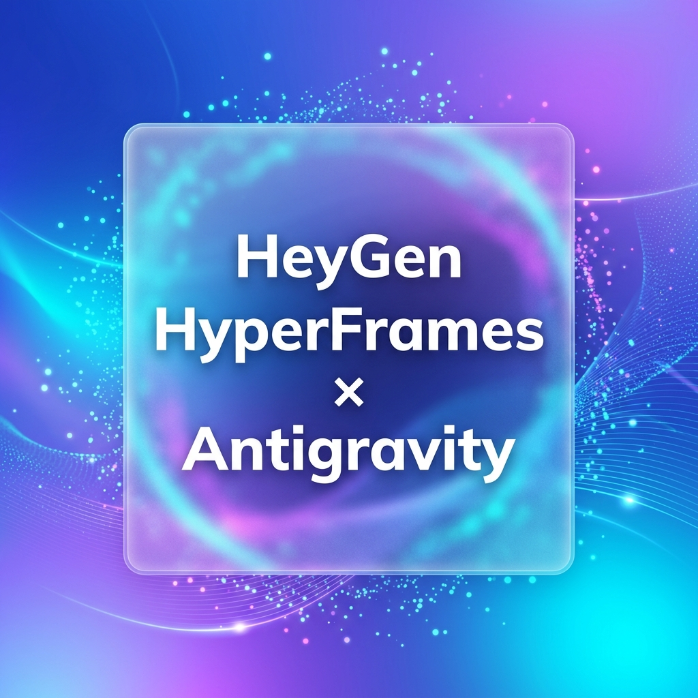

※ブラウザの音声制限を解除し、高音質な解説音声付きで開始します
HeyGenには面白い使い方がたくさんあります。 今日はどちらの方法を楽しく学んでいきたいですか？
アバター5を使うと、お気に入りのポートレートや静止画をベースに、まるで本当に喋っているかのような高精細で感情豊かなリップシンク動画を瞬時に作成できます。
HyperFramesとエージェント（Antigravityなど）を組み合わせることで、自然言語での指示から直接HTMLベースのプレゼンやグラフアニメーションを動的にビルドし、音ズレゼロで書き出せます。